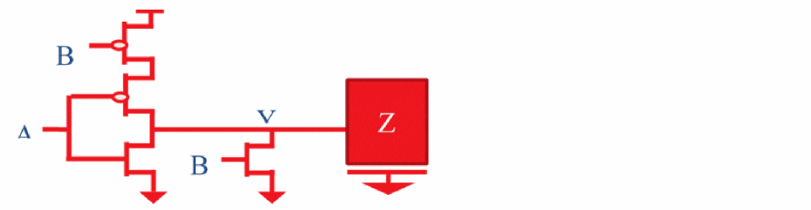
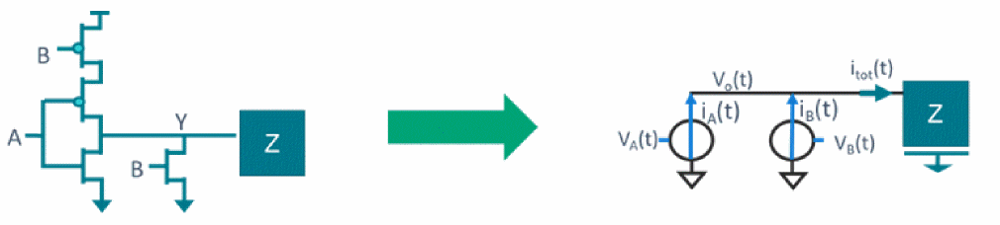

Advanced Multiple-Input Switching - Overview
A multi-input switching (MIS) event occurs when two or more inputs of a gate are switching together, close enough in time to cause either a larger or smaller delay than any of the inputs switching alone. Traditional STA assumes that only one input switches at a given time and all other side inputs are at static logical state. This is known as single-input switching (SIS).
Pessimism may be caused by multiple inputs switching on delay. Tempus supports derate-based methodology for modeling SSI (simultaneous switching inputs) for eliminating optimism. However, the derate-based approach is pessimistic and may impact PPA (performance, power, and area).
This phenomenon is most commonly observed in gates such as NOR and NAND (see figure below).
Figure -104 NOR-2 gate has parallel n-stacks both discharge output when turned on
The reason for this is that when both inputs rise together, they open two parallel n-stacks (see figure below). Both of these stacks will conduct current and hence cause the output load to discharge faster. Tempus STA with MIS models this combined effect of multiple currents from parallel stacks accurately.
Figure -105 NOR gate showing speed-up with two inputs rising.

User Interface and Timing Analysis with Advanced MIS
The Tempus delay calculation engine supports advanced MIS natively.
Figure -106 SSI in delay calculation

During delay calculation simulations, Tempus models SSI as concurrent current sources switching at certain times based on their arrival-timing windows. The MIS is also supported for tied inputs, which means the inputs tied together are recognized as switching at the same time. Advanced MIS is supported in Tempus for both GBA and PBA analyses. Tempus models only the speed-up caused by MIS for early analysis (early delays).
Return to top